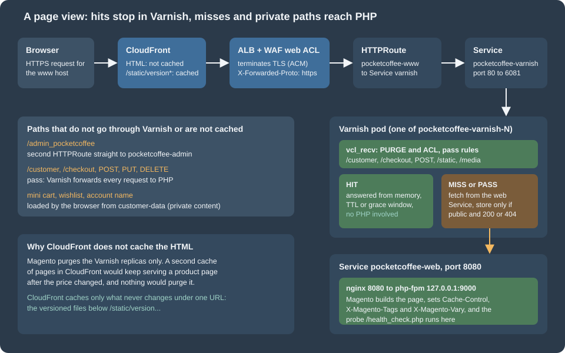
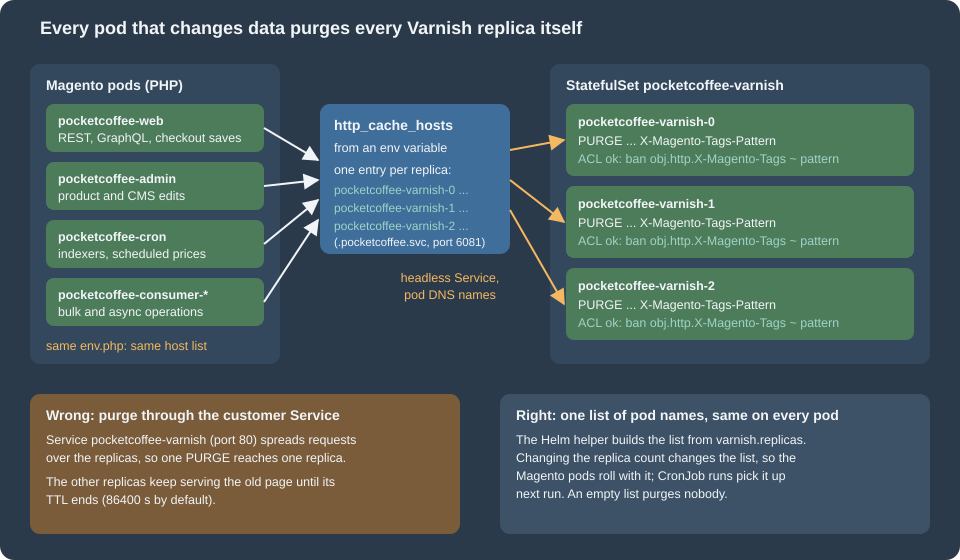

Cloud: Varnish and Full Page Cache on Kubernetes
|
This content was generated with the assistance of AI and should be verified against the official documentation before being relied on in production. |
This page was written against Magento Open Source and Adobe Commerce 2.4.9 (GA 2026-05-12) and Mage-OS 3.6.0, the official varnish:8.0.2 image (Adobe’s system requirements list Varnish 8 for 2.4.9), nginx 1.29, Kubernetes 1.36 and 1.37 on EKS, Helm 4.3 and OpenTofu 1.12 with the AWS provider 6.71, and checked on 2026-10-29. The Magento facts were read in the public source of Mage-OS (mage-os/mageos-magento2, branch 2.4-develop: the Magento_PageCache and Magento_CacheInvalidate modules, the VCL templates and pub/health_check.php) and in Adobe’s documentation. The listings were validated as follows: helm lint and helm template piped to kubeconform -strict, varnishd -C (the VCL compiler of Varnish 8.0.2, in the official container), shellcheck, php -l plus a run of the env.php fragment, and tofu validate and tofu fmt -check. Two things were run for real in containers: two Varnish 8.0.2 replicas behind the generated VCL with an nginx or PHP backend (hit and miss, PURGE with and without the header, the ACL, a purge sent to one replica only, the backend probe, the response header limits), and the pod’s security settings (--read-only, user 1000). What could not be run is listed at the end: there was no Magento store with a database and no AWS account, so bin/magento varnish:vcl:generate was not executed (its substitution was reproduced from its source) and CloudFront and the load balancer behave as documented, not as observed.
Magento’s page cache is the part of the platform that gets the largest speed-up and breaks most easily when a shop goes from one server to a cluster. On one server there is one Varnish, one env.php and one address to purge; on Kubernetes there are several Varnish replicas that come and go, several kinds of Magento pods that all change data, a load balancer that terminates TLS, and often a CDN. This page is about exactly those differences. The single-server mechanics (cache types, tags, the built-in cache, private content, the VCL template in detail) are in Caching, Indexing and Performance and are not repeated; the architecture the page fits into is in Cloud: Reference Architecture, and the cache that is not the page cache (Valkey for the Magento cache and for sessions) is in Cloud: OpenSearch, Valkey and RabbitMQ as Managed Services. The shop is Pocket Coffee, deployed with the Helm chart pocketcoffee-magento that is assembled in Cloud: EKS Infrastructure and Helm Deployment; the listings below are the Varnish part of that chart.

Where the page cache lives, and what the cluster changes
Four caches can hold a Magento page on the way to a shopper. Only one of them is under Magento’s control.
| Layer | What it holds | Who invalidates it |
|---|---|---|
Browser |
Nothing: Varnish rewrites |
Not needed |
CloudFront |
Only versioned static files (this page) |
Never: the URL changes with the version |
Varnish ( |
The full HTML of public pages, per store view and per |
Magento, with an HTTP |
Magento cache in Valkey |
Configuration, layout, blocks, translations, the EAV and collection caches |
|
The built-in page cache (caching_application 1) stores pages in the cache backend, that is in Valkey, and answers from PHP. Adobe’s documentation calls Varnish the production choice and the built-in cache the development one, and the naming sheet of this series follows it: the full page cache is Varnish, not Valkey. A page served by Varnish does not run PHP at all; a page served by the built-in cache boots Magento’s front controller, reads the page from Valkey and returns it, which keeps most of the CPU cost.
On one server three facts are so obvious that nobody writes them down. Each of them is a decision on Kubernetes:
-
There is one Varnish. In the cluster there are N replicas with N separate memories. A page is cached in the replicas that happened to receive a request for it, and an invalidation has to reach all of them.
-
Magento runs in one place. In the cluster the web pods, the admin pod, the cron job, the queue consumers and every one-off Job can save an entity and therefore must purge. All of them need the same list of Varnish addresses.
-
TLS ends at the web server in front of Varnish. In the cluster it ends at the ALB, so Magento sees plain HTTP from Varnish and has to be told, by a header, that the visitor used HTTPS.
Varnish as a StatefulSet
A cache is the textbook stateless workload, and a Deployment with a normal Service would be the usual choice. The naming sheet of this series deliberately uses a StatefulSet instead, and only for one reason: per-pod addressing. Magento purges by sending a request to each address in http_cache_hosts. A Deployment gives its pods random names, and the only stable name is the Service, which balances every request to one pod. With a StatefulSet and a headless Service each replica has a DNS name that never changes while the replica exists:
pocketcoffee-varnish-0.pocketcoffee-varnish-headless.pocketcoffee.svc.cluster.local:6081 pocketcoffee-varnish-1.pocketcoffee-varnish-headless.pocketcoffee.svc.cluster.local:6081 pocketcoffee-varnish-2.pocketcoffee-varnish-headless.pocketcoffee.svc.cluster.local:6081
The StatefulSet owns no storage. The cache is memory only (-s malloc), a restarted pod starts empty, and an empty Varnish can never serve a stale page, so nothing has to be kept. The StatefulSet is not used for ordering either: podManagementPolicy: Parallel starts and stops the replicas together. The general mechanics (ordinals, the headless Service, per-pod DNS, update strategies) are in StatefulSets.
Two Services select the same pods and serve different callers:
| Service | Type | Used by |
|---|---|---|
|
|
The Gateway’s |
|
|
The pod DNS names above, used only by Magento to send |
The values of the Varnish part of the chart:
shop:
domain: www.pocketcoffee.example
adminFrontName: admin_pocketcoffee
varnish:
replicas: 3
image:
repository: 123456789012.dkr.ecr.eu-west-1.amazonaws.com/pocketcoffee/varnish
tag: "8.0.2"
size: 1g
resources:
requests:
cpu: 500m
memory: 1536Mi
limits:
memory: 1536Mi
httpRoute:
parentRef:
name: pocketcoffee-public
namespace: gatewayvarnish.replicas is the only number that matters outside the Varnish manifests, because the list of purge targets is derived from it (next section). varnish.size is the size of the malloc storage; the process uses more than that for workspaces, thread stacks and the hash, so the memory limit above is set to one and a half times the storage as a starting point, to be corrected from container_memory_working_set_bytes after a day of traffic. The names varnish.image.*, varnish.size and varnish.resources are not part of the shared naming sheet; page 36 owns the final spelling of the values. The image is the official varnish image copied to the ECR repository pocketcoffee/varnish (a copy keeps the cluster independent of Docker Hub rate limits and lets the pipeline scan it; pull-through caching is an alternative); the tag is the exact version, never latest. The official image reads the VCL from /etc/varnish/default.vcl, runs as the user varnish (uid 1000 in the 8.0.2 image) and, started with arguments that do not begin with a dash, runs the command given, which is what the StatefulSet does so that every listener and parameter is explicit.
The ConfigMap with the VCL, the two Services and the PodDisruptionBudget:
apiVersion: v1
kind: ConfigMap
metadata:
name: {{ .Release.Name }}-varnish-vcl
labels:
{{- include "pc.labels" . | nindent 4 }}
data:
default.vcl: |-
{{- .Files.Get "files/default.vcl" | nindent 4 }}
local.vcl: |-
{{- .Files.Get "files/local.vcl" | nindent 4 }}apiVersion: v1
kind: Service
metadata:
name: {{ .Release.Name }}-varnish
labels:
{{- include "pc.labels" . | nindent 4 }}
spec:
type: ClusterIP
selector:
{{- include "pc.selector" . | nindent 4 }}
app.kubernetes.io/component: varnish
ports:
- name: http
port: 80
targetPort: http
---
apiVersion: v1
kind: Service
metadata:
name: {{ .Release.Name }}-varnish-headless
labels:
{{- include "pc.labels" . | nindent 4 }}
spec:
clusterIP: None
selector:
{{- include "pc.selector" . | nindent 4 }}
app.kubernetes.io/component: varnish
ports:
- name: http
port: 6081
targetPort: httpapiVersion: policy/v1
kind: PodDisruptionBudget
metadata:
name: {{ .Release.Name }}-varnish
labels:
{{- include "pc.labels" . | nindent 4 }}
spec:
maxUnavailable: 1
selector:
matchLabels:
{{- include "pc.selector" . | nindent 6 }}
app.kubernetes.io/component: varnishSource: Kubernetes: Headless Services
The StatefulSet:
apiVersion: apps/v1
kind: StatefulSet
metadata:
name: {{ .Release.Name }}-varnish
labels:
{{- include "pc.labels" . | nindent 4 }}
app.kubernetes.io/component: varnish
spec:
serviceName: {{ .Release.Name }}-varnish-headless
replicas: {{ .Values.varnish.replicas }}
podManagementPolicy: Parallel
updateStrategy:
type: RollingUpdate
selector:
matchLabels:
{{- include "pc.selector" . | nindent 6 }}
app.kubernetes.io/component: varnish
template:
metadata:
labels:
{{- include "pc.selector" . | nindent 8 }}
app.kubernetes.io/component: varnish
annotations:
checksum/vcl: {{ include (print $.Template.BasePath "/varnish-configmap.yaml") . | sha256sum }}
spec:
serviceAccountName: {{ .Release.Name }}-magento
automountServiceAccountToken: false
terminationGracePeriodSeconds: 30
securityContext:
runAsNonRoot: true
runAsUser: 1000
runAsGroup: 1000
fsGroup: 1000
seccompProfile:
type: RuntimeDefault
topologySpreadConstraints:
- maxSkew: 1
topologyKey: topology.kubernetes.io/zone
whenUnsatisfiable: ScheduleAnyway
labelSelector:
matchLabels:
{{- include "pc.selector" . | nindent 14 }}
app.kubernetes.io/component: varnish
containers:
- name: varnish
image: "{{ .Values.varnish.image.repository }}:{{ .Values.varnish.image.tag }}"
args:
- varnishd
- -F
- -f
- /etc/varnish/default.vcl
- -a
- http=:6081,HTTP
- -s
- malloc,{{ .Values.varnish.size }}
- -p
- feature=+http2
- -p
- http_resp_hdr_len=32k
- -p
- http_resp_size=64k
- -p
- workspace_backend=128k
ports:
- name: http
containerPort: 6081
startupProbe:
tcpSocket:
port: http
periodSeconds: 2
failureThreshold: 30
readinessProbe:
tcpSocket:
port: http
periodSeconds: 5
livenessProbe:
exec:
command: ["varnishadm", "ping"]
periodSeconds: 10
timeoutSeconds: 3
failureThreshold: 3
resources:
{{- toYaml .Values.varnish.resources | nindent 12 }}
securityContext:
allowPrivilegeEscalation: false
readOnlyRootFilesystem: true
capabilities:
drop: ["ALL"]
volumeMounts:
- name: vcl
mountPath: /etc/varnish
readOnly: true
- name: workdir
mountPath: /var/lib/varnish
volumes:
- name: vcl
configMap:
name: {{ .Release.Name }}-varnish-vcl
- name: workdir
emptyDir:
medium: Memory
sizeLimit: 128MiChoices in that manifest that are easy to get wrong:
-
The port is 6081, not 80. The image listens on port 80 by default (
VARNISH_HTTP_PORT); binding a port below 1024 needs a privilege that the manifest drops (unless the container runtime lowers the unprivileged port start), and 6081 is Varnish’s traditional port, so no such assumption is made. The Service maps 80 to it, andhttp_cache_hostsnames 6081 directly. -
The checksum annotation restarts the replicas when the VCL changes. Varnish reads the VCL at start; without the restart the ConfigMap would change on disk and the running cache would keep the old rules. A restart empties the cache, so a VCL change is a deliberate, scheduled event (see the last section).
-
The probes do not look at the backend. Readiness is a TCP check on the listener, and liveness is
varnishadm pingthrough the management socket in the pod’s own working directory (the same command was run in the container started with--read-only). An HTTP readiness check that went through to Magento would make all replicas unready at once when the database has a problem, and the cached pages that could still be served would disappear with them. The three health checks and what each one is for are in Health checks: three different questions. -
Memory for the working directory.
varnishdwrites its shared-memory log and its working files below/var/lib/varnish; the manifest mounts a memory-backedemptyDirthere so that the root filesystem can stay read-only. Without the mount the container fails at start with a permission error (seen when the directory was not writable for uid 1000). -
Response header limits. Magento puts every cache tag of a page into the
X-Magento-Tagsresponse header, and a category page with many products has thousands of them. Varnish 8.0.2 hashttp_resp_hdr_lenat 8 KB by default and answers 503 Backend fetch failed when a backend header is longer. With a 12 KB tag header and the defaults the test backend produced 503 on every request; withhttp_resp_hdr_len=32k,http_resp_size=64kandworkspace_backend=128k(the flags in the manifest) the same page was cached. The web tier needs the matching setting, for nginxfastcgi_buffer_sizeandfastcgi_buffers, which belong to the nginx configuration of the image (see Cloud: Container Image and Pipeline Build). Adobe’s pages that were read do not mention these parameters, so treat the sizes as a starting point and measure the largestX-Magento-Tagsof your catalog. -
Spreading. The topology spread constraint puts the replicas in different Availability Zones when it can;
ScheduleAnywaylets a replica start in a full zone rather than stay pending. The PodDisruptionBudget allows one replica to be unavailable during a node drain, which with three replicas leaves two caches serving. The scheduling mechanics are in Scheduling and Disruptions. -
No HorizontalPodAutoscaler. The number of replicas is the number of purge targets. Scaling it up or down is a configuration change that has to reach every Magento pod, so it is done through
varnish.replicasand a release, not by an autoscaler (a replica that the autoscaler adds would not be in anyone’shttp_cache_hostsand would serve pages that are never purged).
The generated VCL
Varnish does not read Magento’s configuration. Magento produces a VCL file from a template, replacing six placeholders with the settings of the store, and the file is what the replicas run. The command is varnish:vcl:generate:
| Option | Meaning | Default |
|---|---|---|
|
Which template: |
|
|
Host and port of the web tier: here the Service |
|
|
Who may send |
|
|
Seconds of grace in |
|
|
A template of your own, relative to the Magento root |
the module’s template |
|
Write to a file instead of standard output |
standard output |
Besides the options, the command reads two values from the store configuration: web/secure/offloader_header (the header that carries the protocol, described below) and design/theme/ua_regexp (design exceptions: different themes for different user agents, which become extra hash_data() calls). Adobe’s Admin does the same thing with the buttons under Stores > Configuration > Advanced > System > Full Page Cache > Varnish Configuration. The six replaced placeholders are /* {{ host }} */, /* {{ port }} */, /* {{ ips }} */, /* {{ design_exceptions_code }} */, /* {{ ssl_offloaded_header }} */ (underscores replaced by dashes, because web servers drop headers with underscores) and /* {{ grace_period }} */.
Which template for Varnish 8. Adobe’s system requirements list Varnish 8 for 2.4.9 (and for 2.4.8-p5), yet the command in the source offers 6 and 7. The two templates are identical except for two comment lines ("the used Varnish version is 6" and "7", and the minimal version), so the choice does not change the behaviour. This page uses --export-version=7 because its comment states the right minimum. The generated file, with the six values of Pocket Coffee, compiles with varnishd -C of Varnish 8.0.2, and so does the 6 variant; whether Adobe publishes a template for 8 after the date of this page is something to check in the release notes before an upgrade.
The access list is the part of the file that needs thought in a cluster. The generator writes each entry as a quoted string. Adobe’s page for the Admin says the field accepts "hostnames, IP addresses, or CIDR ranges", and the compiled result confirms CIDR notation: "10.10.64.0/18"; compiles in Varnish 8.0.2 and matches the whole range (a request from inside the range got 200, a request from outside got 405). Pod addresses change at every restart, so a list of single IPs is useless; a hostname in the ACL is resolved once when the VCL is compiled, so it is useless too. Use the CIDR of the private subnets that hold the pods. Do not use the VPC CIDR: the load balancer’s addresses belong to it, and a customer’s request arrives at Varnish with the load balancer’s address as the client address, so with the whole VPC in the ACL anyone could send a PURGE through the public URL. Keep the load balancer in subnets of their own, outside the range in the ACL, and see the variant below for a stronger separation.
An excerpt of what the command produced for the store (the placeholders replaced by the values above):
backend default {
.host = "pocketcoffee-web";
.port = "8080";
.first_byte_timeout = 600s;
.probe = {
.url = "/health_check.php";
.timeout = 2s;
.interval = 5s;
.window = 10;
.threshold = 5;
}
}
acl purge {
"10.10.64.0/18";
}
sub vcl_recv {
# ... sorting of query string parameters ...
if (req.method == "PURGE") {
if (client.ip !~ purge) {
return (synth(405, "Method not allowed"));
}
if (!req.http.X-Magento-Tags-Pattern && !req.http.X-Pool) {
return (synth(400, "X-Magento-Tags-Pattern or X-Pool header required"));
}
if (req.http.X-Magento-Tags-Pattern) {
ban("obj.http.X-Magento-Tags ~ " + req.http.X-Magento-Tags-Pattern);
}
if (req.http.X-Pool) {
ban("obj.http.X-Pool ~ " + req.http.X-Pool);
}
return (synth(200, "Purged"));
}
# ... methods, /customer, /checkout, health check, tracking parameters, static, GraphQL ...
return (hash);
}
sub vcl_hash {
if ((req.url !~ "/graphql" || !req.http.X-Magento-Cache-Id) && req.http.cookie ~ "X-Magento-Vary=") {
hash_data(regsub(req.http.cookie, "^.*?X-Magento-Vary=([^;]+);*.*$", "\1"));
}
# To make sure http users don't see ssl warning
if (req.http.X-Forwarded-Proto) {
hash_data(req.http.X-Forwarded-Proto);
}
# ... GraphQL headers ...
}Source: Mage-OS: the Varnish 7 VCL template of Magento_PageCache, Adobe Commerce docs: Configure Magento to use Varnish
Two details of the acl purge block matter for the next section. A purge is a ban, not an immediate removal: Varnish records the expression and tests every cached object against it on its next lookup (or in the background), which is why a purge returns at once even for thousands of pages. And the check is on client.ip, the address of the TCP connection, not on a header: it cannot be forged by a visitor, but it is also exactly the address of whoever’s connection reaches the listener.
Generating the file in the pipeline
The command boots Magento, so it needs a working installation with the configuration (the offloader header, the design exceptions). The most reliable place is the image that is about to be released, run in the cluster that has the database: a command in a running web pod, or in a one-off Job from the same image. The result is written to the chart, reviewed as a diff in Git, and released like code. The script below does that; it refuses a file in which a placeholder is left, which is what happens when a distribution replaces the command. The existing Caching, Indexing and Performance page measured exactly that on the Mage-OS test store: the build ships a module with its own varnish:vcl:generate and the placeholders came out unreplaced, so on Mage-OS read the distribution’s documentation, or pass --input-file with Adobe’s template and check the result.
#!/usr/bin/env bash
# Regenerate the VCL that the chart mounts into Varnish, from the Magento image that is running.
# Run it after every Magento upgrade and after changing the full page cache settings or the
# design exceptions (user-agent rules); review the diff in Git before the release.
set -euo pipefail
namespace="${NAMESPACE:-pocketcoffee}"
pod_cidr="${POD_CIDR:?set POD_CIDR to the CIDR of the private subnets that hold the pods}"
grace="${GRACE_PERIOD:-300}"
dir="${1:-charts/pocketcoffee-magento/files}"
tmp="$(mktemp)"
trap 'rm -f "$tmp"' EXIT
kubectl --namespace "$namespace" exec deploy/pocketcoffee-web --container php-fpm -- \
bin/magento varnish:vcl:generate --no-ansi \
--export-version=7 \
--backend-host=pocketcoffee-web \
--backend-port=8080 \
--access-list="$pod_cidr" \
--grace-period="$grace" > "$tmp"
# A generator that is not Magento's own (Mage-OS ships a replacement command in some builds)
# can leave the placeholders of the template in place; Varnish would refuse such a file.
if grep -q '{{ ' "$tmp"; then
echo "unreplaced template placeholders in the generated VCL" >&2
exit 1
fi
# Our own rules (local.vcl, kept next to the output) go in front of the generated vcl_recv:
# Varnish concatenates the definitions of a subroutine in file order.
awk '{ print } /^import std;/ && !done { print ""; print "include \"local.vcl\";"; done = 1 }' "$tmp" > "$dir/default.vcl"
echo "wrote $dir/default.vcl"The script puts one line into the generated file, include "local.vcl";, right after import std;. Varnish concatenates the definitions of one subroutine in the order of the file, so the vcl_recv of local.vcl runs before the generated one. That is the place for rules that belong to the platform and not to Magento, without editing the generated text. The first rule answers the load balancer’s health check (see the health checks below):
# Rules that run before the generated vcl_recv. Varnish concatenates all definitions of a
# subroutine in the order in which they appear in the file.
sub vcl_recv {
# Answer the load balancer's target health check without touching the backend, so that a
# database outage does not take every Varnish target out of the load balancer.
if (req.url == "/varnish-health") {
return (synth(200, "OK"));
}
}The compile check runs the same Varnish version as the cluster, with -C, which compiles the file and exits. The backend host name must resolve at that moment (Varnish resolves it when the VCL is loaded, not per request), so the script gives it a fixed address:
#!/usr/bin/env bash
# Compile the VCL files of a directory with the Varnish version that runs in the cluster, without starting a cache.
# The backend host name has to resolve while the VCL is compiled, so a fixed address stands in
# for the ClusterIP of the Service pocketcoffee-web.
set -euo pipefail
dir="${1:?usage: check-vcl.sh <directory with default.vcl and local.vcl>}"
image="${VARNISH_IMAGE:-varnish:8.0.2}"
log="$(mktemp)"
trap 'rm -f "$log"' EXIT
# varnishd -C prints the generated C code; only the compiler messages matter here.
if docker run --rm \
--add-host pocketcoffee-web:10.96.0.10 \
--tmpfs /tmp:exec,mode=1777 \
--tmpfs /var/lib/varnish:exec,mode=1777 \
--volume "$(cd "$dir" && pwd):/etc/varnish:ro" \
--entrypoint varnishd \
"$image" -C -f /etc/varnish/default.vcl > "$log" 2>&1; then
echo "VCL compiles with $image"
else
grep -A8 'VCC-compiler' "$log" >&2 || head -n 20 "$log" >&2
exit 1
fiSource: Varnish: varnishd reference
The same run showed that Varnish resolves the backend name when the VCL is compiled: an unknown name stops the start with "could not be resolved". In the cluster that name is the Service pocketcoffee-web, which exists before the Varnish pods are created because the chart creates it; a Varnish replica that starts while the Service does not exist yet fails, restarts and succeeds on the next attempt. The address behind the name is the Service’s ClusterIP, which does not change while the Service exists, so the pods behind it can be replaced freely.
Purging every replica from every pod
Magento sends a purge when something that appears on a cached page changes. The chain, in the source of the Magento_CacheInvalidate module:
-
A save of an entity (a product, a category, a CMS block) dispatches
clean_cache_by_tags. -
The observer
InvalidateVarnishObserverchecks that the full page cache type is enabled and thatcaching_applicationis Varnish (2), asks the tag resolver for the tags of the entity, and wraps each in a regular expression of the form((^|,)cat_p_5(,|$)). -
PurgeCache::sendPurgeRequestjoins the expressions with|, in chunks that keep the header below 7680 bytes (the default of its constructor, chosen to fit the 8 KB request header limit that Varnish has by default), and writes onePURGE /request per chunk to every host ofhttp_cache_hosts, with the chunk in the headerX-Magento-Tags-Patternand theHostheader set to that host. -
Varnish runs
ban("obj.http.X-Magento-Tags ~ " + pattern).
Three consequences follow from the code and matter in a cluster. The purge is synchronous: PHP opens a socket per host and waits for the answer, with a timeout of 10 seconds, inside the request that saved the entity (or the consumer or cron run that did). A black-holed Varnish address therefore slows saves down instead of failing them. The purge is per host with no retry: if one replica does not answer, a warning is logged ("Unresponsive cache server(s) hit") and the others are purged; only if no host answered is a critical entry written and false returned. A replica that was unreachable at that moment keeps the old page until its TTL ends. And the purge comes from the pod that saved, so the ACL must contain the addresses of all kinds of Magento pods, which is why the pod subnet CIDR is the right entry and not a list of addresses.

The list in env.php
http_cache_hosts is a list of host and port pairs in app/etc/env.php. Adobe documents the command that writes it, with the format <hostname or ip>:<port>, comma separated, "Do not separate hosts with a space character", and "Configure all Varnish hosts, whether you have one or many":
bin/magento setup:config:set --http-cache-hosts=pocketcoffee-varnish-0.pocketcoffee-varnish-headless.pocketcoffee.svc.cluster.local:6081,pocketcoffee-varnish-1.pocketcoffee-varnish-headless.pocketcoffee.svc.cluster.local:6081In the cluster env.php is not written by a command at all: it is the template in the ConfigMap pocketcoffee-env-php, mounted read-only, and setup:config:set would fail on a read-only file. The template builds the list from the environment variable MAGENTO_VARNISH_HOSTS:
<?php
/**
* Excerpt of the app/etc/env.php template mounted from the ConfigMap pocketcoffee-env-php.
* Everything environment specific comes from getenv(); nothing in this file is a secret.
*/
// MAGENTO_VARNISH_HOSTS is "host:port,host:port,...": one entry per Varnish replica.
$varnishHosts = [];
foreach (explode(',', (string) getenv('MAGENTO_VARNISH_HOSTS')) as $entry) {
$entry = trim($entry);
if ($entry === '') {
continue;
}
$parts = explode(':', $entry, 2);
$varnishHosts[] = ['host' => $parts[0], 'port' => (int) ($parts[1] ?? 80)];
}
$config = [
'MAGE_MODE' => getenv('MAGENTO_MODE') ?: 'production',
// ... backend, db, cache, session, queue and the other nodes of the full template ...
];
// An empty array would make Magento purge nobody: leave the key out instead, so that it
// falls back to the request host and the problem shows up in the first test.
if ($varnishHosts !== []) {
$config['http_cache_hosts'] = $varnishHosts;
}
return $config;The fragment leaves the key out when the list is empty, and that is deliberate. In Magento\PageCache\Model\Cache\Server::getUris an array under http_cache_hosts is used as it is, even when it is empty, and then there is no host to purge: the shop would run for days with no error and pages would never change. Without the key the code falls back to the host of the current request, which does not exist in a CLI process, where it uses the base URL of the shop instead and sends the purge to the public address (CloudFront), which does not purge anything; a missing variable is therefore visible in the first test of check 2 below. The key is read through ConfigOptionsListConstants::CONFIG_PATH_CACHE_HOSTS, which is the string http_cache_hosts, and the port is an integer in the template (80 when omitted).
One list for every Magento pod
The variable is built once by a Helm helper from varnish.replicas, and every Magento workload reads the same value:
{{- define "pc.name" -}}
{{ .Release.Name }}
{{- end }}
{{- define "pc.labels" -}}
app.kubernetes.io/name: pocketcoffee-magento
app.kubernetes.io/instance: {{ .Release.Name }}
app.kubernetes.io/managed-by: {{ .Release.Service }}
helm.sh/chart: {{ .Chart.Name }}-{{ .Chart.Version }}
{{- end }}
{{- define "pc.selector" -}}
app.kubernetes.io/name: pocketcoffee-magento
app.kubernetes.io/instance: {{ .Release.Name }}
{{- end }}
{{/* Every Varnish replica by its stable pod DNS name: the value of MAGENTO_VARNISH_HOSTS. */}}
{{- define "pc.varnishHosts" -}}
{{- $hosts := list -}}
{{- range $i := until (int .Values.varnish.replicas) -}}
{{- $hosts = append $hosts (printf "%s-varnish-%d.%s-varnish-headless.%s.svc.cluster.local:6081" $.Release.Name $i $.Release.Name $.Release.Namespace) -}}
{{- end -}}
{{- join "," $hosts -}}
{{- end }}Source: Helm: named templates
The helper renders this for three replicas in the release pocketcoffee and namespace pocketcoffee (the helm template output):
pocketcoffee-varnish-0.pocketcoffee-varnish-headless.pocketcoffee.svc.cluster.local:6081,pocketcoffee-varnish-1.pocketcoffee-varnish-headless.pocketcoffee.svc.cluster.local:6081,pocketcoffee-varnish-2.pocketcoffee-varnish-headless.pocketcoffee.svc.cluster.local:6081
Every Deployment that runs Magento code (pocketcoffee-web, pocketcoffee-admin, the consumers), the CronJob and the Jobs carry the entry in their environment:
- name: MAGENTO_VARNISH_HOSTS
value: {{ include "pc.varnishHosts" . | quote }}Forgetting one workload type is the classic failure: the web pods purge, the consumers that apply a bulk price update do not, and prices on category pages stay old for a day. Putting the helper into the shared environment (the pc.envFrom mechanism of the chart) instead of copying the entry into each manifest removes that class of mistake.
Changing varnish.replicas changes the value and rolls the web pods and consumers; the CronJob picks it up on its next run. During the roll, pods of the old generation purge only the old list, so scaling up leaves a short window in which the new replica is not purged by old pods. The new replica starts empty, so the window only matters for pages it caches in that time; scale up before a quiet period, or flush after the roll (below).
Who may purge
The ACL on the VCL is the only gate: the generated rule answers 405 to a client outside it and 400 to a purge without a header. Both were observed in the two-replica test (purge from inside the ACL with the header: 200; without the header: 400; from an address outside the ACL: 405). On Kubernetes the question is which sources can reach the listener with an address in the ACL. Pods in the subnets of the ACL can: the Magento pods, but also every other pod of the cluster, including a compromised one. A NetworkPolicy that allows ingress to port 6081 only from the Magento pods and from the load balancer’s subnets narrows that; the policy depends on the CNI configuration and is not shown here.
Variant: a purge listener that the customer Service does not expose. Varnish can listen on several ports. A second listener on 6082, used only for PURGE, separates the two uses completely: the Service pocketcoffee-varnish maps port 80 to 6081 only, so nothing that arrives through the load balancer can ever reach 6082 (the load balancer’s target group has the port 6081), and the headless Service and http_cache_hosts name 6082. The change is one more -a purge=:6082,HTTP argument, one more container and Service port, the port in the helper (6082 instead of 6081) and a replacement of the local.vcl above:
sub vcl_recv {
if (req.url == "/varnish-health") {
return (synth(200, "OK"));
}
# PURGE is accepted on the internal listener (6082) only, and nothing else is served there.
# The generated rule that follows still applies the ACL.
if (std.port(server.ip) == 6082 && req.method != "PURGE") {
return (synth(405, "Method not allowed"));
}
if (req.method == "PURGE" && std.port(server.ip) != 6082) {
return (synth(405, "Method not allowed"));
}
}Source: Varnish: std.port(server.ip)
With this file and the generated VCL a purge on 6082 from inside the ACL returned 200, a purge on 6081 returned 405 even from inside the ACL, and any other method on 6082 returned 405 (all four requests were made in one container with the ACL set to 127.0.0.0/8 for the test). The variant is not needed when the ALB sits in separate subnets and the ACL is the pod CIDR; it is the better choice when the subnets cannot be separated or when the cluster is shared.
Flushing everything, and what clears nothing
The admin buttons "Flush Magento Cache" and "Flush Cache Storage" and the cache refresh action dispatch events that FlushAllCacheObserver listens to; it sends one purge with the pattern .*, which bans every object in every replica. Changing the theme assignment and applying catalog price rules invalidate by tag, and cleaning the media or the catalog image cache sends the same flush-all. These are the events in Magento_CacheInvalidate/etc/events.xml of the source that was read.
What does not purge Varnish is anything that works on files or on the cache backend without dispatching those events. Adobe says it for the one case it documents: "if you delete var/cache by hand, restart Varnish". The same holds for a flush of the Valkey database from the command line. Whether bin/magento cache:flush and cache:clean send a purge was not verified against a running store (the CLI commands do not go through the admin events above); do not rely on it. A flush that is certain is a purge sent by hand to every replica:
for i in 0 1 2; do
kubectl --namespace pocketcoffee exec pocketcoffee-varnish-$i -- \
curl -s -o /dev/null -w "varnish-$i %{http_code}\n" \
-X PURGE -H 'X-Magento-Tags-Pattern: .*' http://127.0.0.1:6081/
doneRun that way from inside the pod the client address is 127.0.0.1, which is not in an ACL that holds only the pod CIDR, and the answer is 405. Either add "127.0.0.1" to the ACL (an extra --access-list=127.0.0.1 in the generator call; a process inside the pod is already trusted) or run the curl from a Magento pod against the pod DNS names. The second form tests exactly what Magento does:
kubectl --namespace pocketcoffee exec deploy/pocketcoffee-web --container php-fpm -- \
sh -c 'for h in $(echo "$MAGENTO_VARNISH_HOSTS" | tr , " "); do
curl -s -o /dev/null -w "%{http_code} $h\n" -X PURGE -H "X-Magento-Tags-Pattern: cat_p_1" "http://$h/"
done'Source: Varnish: purging and banning
Every line must say 200. The image has to contain curl for this; if it does not, run the loop from a debug container in the namespace.
Health checks: three different questions
A healthy Varnish pod, a healthy backend and a healthy target of the load balancer are three different facts, and they get three different checks.
| Check | Question | Implementation |
|---|---|---|
Kubernetes probes of the Varnish pod |
Is the cache process alive and listening? |
|
Varnish’s backend probe |
Can Magento build a page right now? Decides grace behaviour |
The |
Load balancer target health |
Should this replica receive customer traffic? |
A path that Varnish answers itself: |
The backend probe. The template polls /health_check.php, which is correct for a document root of pub/ (the layout of the image). Adobe’s page for a document root of the Magento root says the path is /pub/health_check.php, and its health-check text states the rest: the script must answer within 2 seconds, it returns HTTP 500 when a resource is down, and "six failures in ten attempts mark the backend unhealthy" (the window and threshold above: the backend is healthy while at least 5 of the last 10 probes passed). The script itself, read in the source: it boots the object manager, opens a connection to every database configured, and calls test() on every cache frontend that has a backend configured (so the Valkey of the Magento cache). It does not check the session store, OpenSearch or RabbitMQ. A page can therefore fail while the probe is green, and the probe turns red when the Magento cache in Valkey is unreachable even if the database is fine. The probe goes through the Service pocketcoffee-web, so each probe lands on one of the ready pods; a single sick pod does not turn the backend unhealthy but one probe out of five fails when one of five pods is broken, which is why the pods' own readiness probe on /health_check.php (Health Probes and Lifecycle) must take that pod out of the Service first.
In the two-replica test the probe showed 8/10 healthy shortly after the start; after the backend was stopped the counter fell by about one per 5 seconds (6/10, then 5/10) and the state was still healthy, because it changes only when fewer than 5 of the last 10 probes pass, which is the sixth failure. It is the same arithmetic as Adobe’s "six failures in ten". varnishadm backend.list prints the state:
kubectl --namespace pocketcoffee exec pocketcoffee-varnish-0 -- varnishadm backend.listSource: Varnish: varnishadm
Why the load balancer does not use the backend probe. If the target group’s health check used /health_check.php, a database outage would make every Varnish target unhealthy at the same moment, the load balancer would answer 503 to everyone, and the pages that Varnish still holds (and is designed to serve with its grace mode) would be unreachable. /varnish-health is answered by vcl_recv with synth(200) and never reaches the backend, so the load balancer only learns whether the cache process works. Configuring the health check of a Gateway API target group is a feature of the AWS Load Balancer Controller’s own resources, whose field names change between versions; they are not reproduced here (see Load Balancers and Gateways and Gateway API). With a target type of ip the controller registers the pod addresses, so the health check also decides which replicas receive traffic during a rollout.
Grace mode and stale content
Three numbers decide how long a visitor can see an old page, and all three can be read in the generated file:
| Setting | Value | Where |
|---|---|---|
TTL of a page |
86400 s |
|
Grace with a healthy backend |
300 s |
|
Grace with an unhealthy backend |
|
Hard-coded in |
The logic is the vcl_hit shown earlier. Inside the TTL, the object is delivered. After the TTL and within the 300 seconds, Varnish delivers the stale copy and refreshes it in the background (the header Grace of the response says normal (healthy server)); after the 300 seconds the request goes to the backend (restart). If the probe says the backend is unhealthy, Varnish delivers the stale copy for as long as it holds one, which can be days (unlimited (unhealthy server)). That is the reason for the three-day figure on the backend side, and Adobe’s text gives the same maximum of grace plus TTL.
What this means for a store in a cluster:
-
A database failover is invisible to anonymous visitors as long as the pages are cached; checkout, login and the cart (which are never cached) fail until the database is back.
-
Stale data is served on purpose. With the backend down, a product that sold out or changed price shows the old state. A purge during that time bans the object, and a banned object is not served even in grace, so the visitor gets an error instead of an old page; whether that is better is a business decision, and the answer (let purges win) is the one the VCL implements.
-
The 300 seconds are a trade. A longer grace smooths the load after an expiry and makes a slow backend invisible for popular pages; a shorter one limits how old a page can be when the backend is healthy but a purge was missed. The 86400 s TTL is also the upper bound for a replica that missed a purge (previous section).
What goes through, and what is never cached
The generated vcl_recv and vcl_backend_response decide, in this order:
| Request or response | Decision | Why |
|---|---|---|
Method other than |
|
Writes are never cached; |
URL containing |
|
Account pages, |
|
|
The probe must reach PHP |
|
|
The template says static files "should not be cached by default" and shows three lines that enable it; Adobe describes the same change. In the cluster the CDN and the web tier serve them (see CloudFront in front, without a second page cache) |
GraphQL with |
|
Authenticated GraphQL is personal |
Status other than 200 and 404, or |
marked uncacheable for 86400 s (the next request fetches again) |
An error or a private page is not stored |
|
hit-for-pass for 120 s |
The same URL is not retried through the waiting list for two minutes |
Response with |
not stored under this key |
The response belongs to a different variant than the request’s |
The admin area does not appear in that table because the cluster does not send it to Varnish at all: the HTTPRoute below has a first rule for the path prefix /admin_pocketcoffee that goes to pocketcoffee-admin, and Varnish never sees an admin request. The VCL has no admin rule of its own, and the admin pages are non-cacheable only because Magento marks them so (Magento sends no-cache headers for them), so the route is the safe layer and the headers are the second. The name of the admin path is the frontName that the shop changed at build time (MAGENTO_BACKEND_FRONTNAME); a route that matches the old name /admin would send admin traffic to Varnish.
apiVersion: gateway.networking.k8s.io/v1
kind: HTTPRoute
metadata:
name: {{ .Release.Name }}-www
labels:
{{- include "pc.labels" . | nindent 4 }}
spec:
parentRefs:
- name: {{ .Values.httpRoute.parentRef.name }}
namespace: {{ .Values.httpRoute.parentRef.namespace }}
hostnames:
- {{ .Values.shop.domain }}
rules:
- matches:
- path:
type: PathPrefix
value: /{{ .Values.shop.adminFrontName }}
backendRefs:
- name: {{ .Release.Name }}-admin
port: 8080
- matches:
- path:
type: PathPrefix
value: /
backendRefs:
- name: {{ .Release.Name }}-varnish
port: 80Source: Gateway API: HTTPRoute
The rule order does not matter for correctness here because the two path prefixes do not overlap, but the longer prefix is the one to keep first; Gateway API gives precedence to the longest matching path regardless of the order. The Service pocketcoffee-admin exists only when admin.enabled is true; when it is not, the same rule points to pocketcoffee-web, which still bypasses Varnish.
Not cached, and the reason in one line each: the cart, checkout and account pages (personal); every request with a body (not idempotent); GraphQL mutations; authenticated GraphQL requests; the admin; /health_check.php; any page with one block declared cacheable="false" in the layout (the whole page becomes uncacheable, and the test shows X-Magento-Cache-Debug: UNCACHEABLE; this is the most common reason that a hit rate stays near zero after launch, and the fix is in the module’s layout XML, not in Varnish).
Cookies, private content and ESI
The page that Varnish stores is the same for every visitor of one variant, so anything personal is added by the browser afterwards.
-
X-Magento-Vary. A cookie that Magento sets when the visitor belongs to a group that changes the page (a customer group, a currency, a store view selected by cookie).vcl_hashtakes its value into the cache key, so each variant is a separate object. The request without the cookie gets the anonymous variant; the response that would set the cookie for a request that did not send it is not stored under the anonymous key (thebereq.http.cookie !~ "X-Magento-Vary="rule), which prevents a logged-in variant from poisoning the public one. -
Cookies in general. The template collects the
Cookieheader withstd.collectand removesSet-Cookiefrom every cacheable response, so no session cookie is stored in a page or sent from the cache. Cookies are not part of the hash except forX-Magento-Vary; the other cookies are forwarded on a miss and ignored on a hit. -
Private content. Mini cart, wishlist, the customer’s name and the compare list come from
customer/section/loadas JSON after the page has loaded and are kept in the browser’s local storage. The URL contains/customer, so the VCL passes it, and it is the reason that a page can be cached although it shows "Hello, Ana". The mechanism, thesections.xmlfiles and the private-content version cookie are in Caching, Indexing and Performance. -
ESI.
vcl_backend_responsesetsberesp.do_esi = truefor text responses. A block that must have its own lifetime is requested through thepage_cache/block/esiendpoint and assembled by Varnish from separately cached fragments, so Varnish has to be able to reach it with the same cache key rules (theHandles params sizesetting limits the layout handles accepted there; Adobe’s default is 100). -
Tracking parameters. The template strips parameters such as
utm_*,gclid,fbclidandmsclkidfrom the URL before the lookup, so a campaign link does not create a cache entry of its own, and sorts the remaining parameters withstd.querysort. The list lives in the template, with a comment that it must stay in sync withMagento\Framework\App\PageCache\Identifier; after an upgrade that changes the PHP list, regenerate the VCL. -
Design exceptions. Different themes for different user agents (
design/theme/ua_regexp) becomehash_data()calls on the user agent invcl_hash. They are the only place where the User-Agent affects the cache, and the generator is the only thing that writes them: a change in the Admin does nothing for Varnish until the VCL is regenerated and released.
TLS at the ALB and the offloader header
Varnish speaks plain HTTP, and the ALB terminates TLS with the ACM certificate (see Route 53 and Certificates). Magento decides "is this request secure?" in Magento\Framework\HTTP\PhpEnvironment\Request::isSecure: the request is secure if the server variable named by the configuration value web/secure/offloader_header, with dashes changed to underscores and upper-cased, equals the string https (with or without the HTTP_ prefix). The default value is X-Forwarded-Proto, which is what the ALB adds. If the header is missing or different, Magento believes the request is plain HTTP and, with secure URLs enabled for the storefront, redirects to the HTTPS URL, which comes back through the ALB as the same plain request: an endless redirect, usually seen as "too many redirects" on the home page.
Three places must agree:
-
The ALB sets
X-Forwarded-Protoon every request it forwards (AWS documents it for Application Load Balancers). CloudFront reaches the ALB over HTTPS only (theorigin_protocol_policybelow), so the ALB sees HTTPS and the value ishttpsfor all traffic. -
The VCL passes the header unchanged and hashes it:
hash_data(req.http.X-Forwarded-Proto)makes a request with the header and one without it two different objects ("to make sure http users don’t see ssl warning"). With the ALB always sending it there is one variant. The generator takes the name from the store configuration, so the configuration and the VCL cannot disagree as long as the file is regenerated after a change. -
The Magento configuration, stored in
config.phpso that it is part of the image and not editable from the Admin:
bin/magento config:set --lock-config system/full_page_cache/caching_application 2
bin/magento config:set --lock-config system/full_page_cache/ttl 86400
bin/magento config:set --lock-config web/secure/offloader_header X-Forwarded-Proto
bin/magento config:set --lock-config web/secure/use_in_frontend 1
bin/magento config:set --lock-config web/secure/use_in_adminhtml 1caching_application 2 is Varnish; the use_in_frontend and use_in_adminhtml settings make the store build HTTPS URLs and are set to 0 by default in Magento_Store/etc/config.xml. The base URLs themselves are not shown: they come from the environment (MAGENTO_BASE_URL) and belong to Cloud: EKS Infrastructure and Helm Deployment. These commands were not run in this validation (no store was available); they are the documented ones. They need a Magento that can boot (a build or development environment with a database), and the resulting config.php is committed.
The header reaches PHP through nginx without any rule: nginx passes every request header to PHP-FPM as HTTP_ plus the upper-cased name with dashes changed to underscores, so X-Forwarded-Proto becomes HTTP_X_FORWARDED_PROTO, which is the second of the two server variables that isSecure reads. What would break it is an nginx rule that sets fastcgi_param HTTPS from the local connection and a Magento that reads HTTPS first; the image’s nginx must not hard-code it to off.
Where the client address goes. The ALB, Varnish and nginx each add to X-Forwarded-For, so the address that PHP sees in the TCP connection is nginx’s neighbour and Magento’s own remote-address logic is what the shop sees. Admin IP allow-lists and fraud checks need the real address, and Magento’s handling of forwarded headers was not verified for this page; the WooCommerce page in this series shows the mechanism on the other platform (Cloud: Caching, CDN and Checkout), and the Magento handling is a point to check before relying on it.
CloudFront in front, without a second page cache
CloudFront is optional, and adding it raises one design question: does it cache the HTML? No. Magento purges Varnish and nothing else. A product page cached in CloudFront for ten minutes would show the old price for ten minutes after the purge, and there is no purge request that can reach it. Varnish is the page cache; CloudFront is there for TLS and the network at the edge, for DDoS absorption, and for the static files that never change under one URL.
variable "alb_dns_name" {
description = "DNS name of the Application Load Balancer that the Gateway creates (origin of the storefront)."
type = string
}
variable "cloudfront_certificate_arn" {
description = "ACM certificate for pocketcoffee.example and www.pocketcoffee.example, issued in us-east-1."
type = string
}
data "aws_cloudfront_cache_policy" "disabled" {
name = "Managed-CachingDisabled"
}
data "aws_cloudfront_cache_policy" "optimized" {
name = "Managed-CachingOptimized"
}
data "aws_cloudfront_origin_request_policy" "all_viewer" {
name = "Managed-AllViewer"
}
resource "aws_cloudfront_distribution" "storefront" {
enabled = true
comment = "pocketcoffee-prod storefront"
aliases = ["www.pocketcoffee.example", "pocketcoffee.example"]
http_version = "http2and3"
origin {
origin_id = "alb"
domain_name = var.alb_dns_name
custom_origin_config {
http_port = 80
https_port = 443
origin_protocol_policy = "https-only"
origin_ssl_protocols = ["TLSv1.2"]
origin_read_timeout = 60
}
}
# Pages, cart, checkout, API: never cached here. Varnish is the page cache and only
# Magento can purge it, so a second copy of the HTML in CloudFront would go stale.
default_cache_behavior {
target_origin_id = "alb"
viewer_protocol_policy = "redirect-to-https"
allowed_methods = ["GET", "HEAD", "OPTIONS", "PUT", "POST", "PATCH", "DELETE"]
cached_methods = ["GET", "HEAD"]
cache_policy_id = data.aws_cloudfront_cache_policy.disabled.id
origin_request_policy_id = data.aws_cloudfront_origin_request_policy.all_viewer.id
compress = true
}
# Versioned static files: /static/version<N>/... never changes under one URL.
ordered_cache_behavior {
path_pattern = "/static/*"
target_origin_id = "alb"
viewer_protocol_policy = "redirect-to-https"
allowed_methods = ["GET", "HEAD", "OPTIONS"]
cached_methods = ["GET", "HEAD"]
cache_policy_id = data.aws_cloudfront_cache_policy.optimized.id
origin_request_policy_id = data.aws_cloudfront_origin_request_policy.all_viewer.id
compress = true
}
viewer_certificate {
acm_certificate_arn = var.cloudfront_certificate_arn
ssl_support_method = "sni-only"
minimum_protocol_version = "TLSv1.2_2021"
}
restrictions {
geo_restriction {
restriction_type = "none"
}
}
}Source: Terraform Registry: aws_cloudfront_distribution (OpenTofu uses the same provider), AWS: managed cache policies
The decisions in the listing:
-
Managed-CachingDisabledwithManaged-AllViewerfor everything else. All cookies, headers and query strings go to the origin, because Varnish’s key depends onX-Magento-Vary, theHostand the query string. A cache policy that dropped cookies would removeX-Magento-Varyand show the anonymous variant to everybody. -
The
Hostheader is forwarded, so Magento and Varnish seewww.pocketcoffee.exampleand not the ALB’s name (Magento redirects to the base URL when the host differs:web/url/redirect_to_baseis1by default). AWS’s rule for HTTPS origins: the certificate presented by the origin must include either the origin domain name or, when the behaviour forwardsHost, the domain in that header. The ALB’s ACM certificate listswww.pocketcoffee.example, so the connection succeeds with the ALB’s own DNS name as the origin; without the header forwarded it would be a 502 because the certificate does not carry the ALB’s name. -
/static/*is cached withManaged-CachingOptimized(no query string or cookie in the key, one day by default, at most one year). Static files in production mode live under/static/version<N>/, so a new deployment has new URLs and nothing has to be invalidated. Varnish passes/static/to the web tier, so the file is served by nginx behind it. The media files have their own host and distribution (Cloud: Media and Remote Storage). -
All seven methods are allowed on the default behaviour, because the storefront posts forms. The three method groups that CloudFront offers contain only
GET,HEAD,OPTIONS,PUT,POST,PATCHandDELETE, so aPURGErequest sent to the public name never reaches the origin from CloudFront. That is a second reason for a purge to be impossible from outside, in addition to the ACL; the direct name of the load balancer (if it is reachable) is the path that does not have it, which is why the ACL must not contain the load balancer’s subnets.
A web ACL for CloudFront has the scope CLOUDFRONT and lives in us-east-1, which is why the regional web ACL pocketcoffee-prod of the ALB is not attached here; the WAF choices belong to Cloud: Autoscaling, Observability, Backups and Security. The certificate for CloudFront must also be in us-east-1 (the variable of the listing); the ALB’s certificate is in eu-west-1. More on distributions in CloudFront.
Checking the setup
The same checks, in the order that finds problems fastest. The outputs in the comments are from the two-replica test with the generated VCL.
# 1. The VCL compiles with the Varnish of the cluster
./check-vcl.sh charts/pocketcoffee-magento/files # VCL compiles with varnish:8.0.2
# 2. Every Varnish replica is purged by a Magento pod (every line must be 200)
kubectl --namespace pocketcoffee exec deploy/pocketcoffee-web --container php-fpm -- \
sh -c 'for h in $(echo "$MAGENTO_VARNISH_HOSTS" | tr , " "); do
curl -s -o /dev/null -w "%{http_code} $h\n" -X PURGE -H "X-Magento-Tags-Pattern: cat_p_1" "http://$h/"
done'
# 3. A public page is a MISS once and a HIT afterwards (the response header comes from vcl_deliver)
curl -s -D - -o /dev/null https://www.pocketcoffee.example/ | grep -i x-magento-cache-debug # MISS
curl -s -D - -o /dev/null https://www.pocketcoffee.example/ | grep -i x-magento-cache-debug # HIT
# 4. A private path is never cached
curl -s -D - -o /dev/null https://www.pocketcoffee.example/customer/account/ | grep -i x-magento-cache-debug # UNCACHEABLE
# 5. State of the backend probe and the hit rate of one replica
kubectl --namespace pocketcoffee exec pocketcoffee-varnish-0 -- varnishadm backend.list
kubectl --namespace pocketcoffee exec pocketcoffee-varnish-0 -- varnishstat -1 -f MAIN.cache_hit -f MAIN.cache_missSource: Varnish: varnishstat
X-Magento-Cache-Debug is set by the template in vcl_deliver on every response (HIT, MISS or UNCACHEABLE); in a cluster with several replicas a request can be a MISS on each replica once, so the second request that returns HIT may need a third try. The test also showed the exact reason to purge every replica: after a page was cached in both replicas and a purge was sent to the first one only, the first replica answered MISS and the second still answered HIT; only after the second received its purge did it answer MISS.
Common problems
| Symptom | Cause | Fix |
|---|---|---|
A change in the Admin is visible on some requests and not on others |
The purge reached some replicas only: |
Run check 2 above from every kind of Magento pod; fix the shared environment |
Nothing changes for a day, no error in any log |
|
Leave the key out when the list is empty (the fragment above); check |
|
The client address is not in the ACL (a new subnet, or the purge goes through a proxy whose address is) |
Regenerate with the right |
|
A manual |
Add the header; Magento always sends it |
503 "Backend fetch failed" on category pages only |
The |
The |
Endless redirect to HTTPS |
|
Set |
The hit rate stays under 10 % |
A non-cacheable block on every page ( |
Find the block in the layout XML; make CloudFront forward all cookies unchanged (above); check |
After a deployment the origin load spikes |
All replicas were restarted together (a VCL change or an image change) and start empty |
Roll them one at a time ( |
Varnish pods in |
The backend name does not resolve yet, or |
Create the web Service first; check the memory-backed |
Prices on category pages are old for hours after a bulk update |
The consumer that performs the update has no |
The shared environment above; see Cloud: Cron, Queue Consumers and Indexers |
Version notes and what was not verified
-
Varnish versions. Adobe lists Varnish 8 for 2.4.9 and 2.4.8-p5 and 7.7 for 2.4.8-p4; Magento’s command offers
6and7templates and the two are identical in behaviour. The official image tags8.0.2,8.0and8exist (also-alpine); the taglatestwas at 9.1.0 when the page was checked, which is a version Adobe does not list. Use the exact tag and move it when Adobe’s requirements move. -
Mage-OS. The sources read are Mage-OS’s public repository, which tracks Magento’s. The Mage-OS test store of the existing pages carries a module that replaces the VCL generator; the placeholder check in the script is there because of it.
-
Not run.
bin/magento varnish:vcl:generateandconfig:set(no store with a database was available; the generator’s substitution was reproduced from the source ofVclGenerator, and the generated file was compiled and exercised in Varnish 8.0.2); CloudFront, the ALB, the target-group health check and the Gateway’s behaviour (no AWS account); thekubectl execcommands (no cluster); NetworkPolicy; whether the CLI cache commands purge Varnish; Magento’s handling ofX-Forwarded-Forbehind three proxies; the sizes for memory and header buffers, which are starting points. -
Cold caches. A restarted replica is empty; Varnish coalesces simultaneous misses for the same URL (requests wait for the object being fetched), so a cold start costs one backend request per distinct URL, and a cache of a large catalog takes time to warm. Plan restarts for quiet hours.